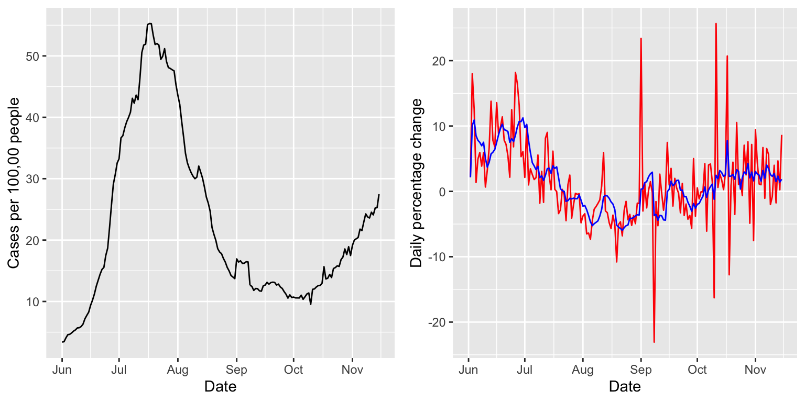

A basic way of assessing growth in a signal is to look at its percentage change over two neighboring time windows. We investigate this in the current vignette, using the pct_change() function in the modeltools package. As in the getting started guide, we focus on state-level COVID-19 case rates from the USAFacts data source, smoothed via 7-day trailing averages, from June to mid November.
library(covidcast)
## We encourage COVIDcast API users to register on our mailing list:
## https://lists.andrew.cmu.edu/mailman/listinfo/delphi-covidcast-api
## We'll send announcements about new data sources, package updates,
## server maintenance, and new features.start_day <- "2020-06-01" end_day <- "2020-11-15" geo_values <- c("ca", "fl", "ny", "tx") case_rates <- suppressMessages( covidcast_signal(data_source = "usa-facts", signal = "confirmed_7dav_incidence_prop", start_day = start_day, end_day = end_day, geo_type = "state", geo_values = geo_values)) summary(case_rates)
## A `covidcast_signal` data frame with 672 rows and 9 columns.
##
## data_source : usa-facts
## signal : confirmed_7dav_incidence_prop
## geo_type : state
##
## first date : 2020-06-01
## last date : 2020-11-15
## median number of geo_values per day : 4The pct_change() function operates on a covidcast_signal data frame, and takes an argument n, indicating the size of the local window (in days) to use. For example, if n = 10, then to compute the percentage change on November 10, we use 100 * (B - A) / A, where A is the sum of the values between November 6 and November 10, and A is the sum of the values between November 1 and November 5. The default is n = 14, giving the percentage change between back-to-back weeks.
library(modeltools) library(dplyr) case_rates <- pct_change(case_rates, n = 14) case_rates %>% arrange(geo_value) %>% select(geo_value, time_value, value, pct_change) %>% print(n = 21)
## # A tibble: 672 x 4
## geo_value time_value value pct_change
## <chr> <date> <dbl> <dbl>
## 1 ca 2020-06-01 6.70 NA
## 2 ca 2020-06-02 6.39 NA
## 3 ca 2020-06-03 6.50 NA
## 4 ca 2020-06-04 6.86 NA
## 5 ca 2020-06-05 7.11 NA
## 6 ca 2020-06-06 6.81 NA
## 7 ca 2020-06-07 6.74 NA
## 8 ca 2020-06-08 6.75 NA
## 9 ca 2020-06-09 6.99 NA
## 10 ca 2020-06-10 7.19 NA
## 11 ca 2020-06-11 7.32 NA
## 12 ca 2020-06-12 7.48 NA
## 13 ca 2020-06-13 7.72 NA
## 14 ca 2020-06-14 7.82 8.84
## 15 ca 2020-06-15 7.88 11.1
## 16 ca 2020-06-16 8.02 11.9
## 17 ca 2020-06-17 8.53 13.0
## 18 ca 2020-06-18 8.62 14.6
## 19 ca 2020-06-19 8.56 16.0
## 20 ca 2020-06-20 8.72 15.8
## 21 ca 2020-06-21 8.94 15.6
## # … with 651 more rowsWe can see that a column pct_change column has been appended to the output data frame, which contains the percentage change values estimates. Next we plot these values alongside the signal itself.
library(ggplot2) library(gridExtra) state = "fl" p1 <- ggplot(case_rates %>% filter(geo_value == state), aes(x = time_value, y = value)) + geom_line() + labs(x = "Date", y = "Cases per 100,00 people") p2 <- ggplot(case_rates %>% filter(geo_value == state), aes(x = time_value, y = pct_change)) + geom_line() + labs(x = "Date", y = "Weekly percentage change") grid.arrange(p1, p2, nrow = 1)
Computing the percentage change between back-to-back days, using n = 2, will generally return a pretty volatile sequence; below we show how to smooth this sequence by post-applying a 7-day trailing average, with a suitable application of slide_by_geo().
case_rates <- case_rates %>% pct_change(n = 2, col_name = "pct_change_daily") %>% slide_by_geo(~ Mean(.x$pct_change_daily), n = 7, col_name = "pct_change_daily_7dav") case_rates %>% arrange(geo_value) %>% select(geo_value, time_value, value, pct_change_daily, pct_change_daily_7dav) %>% head(n = 7)
## # A tibble: 7 x 5
## geo_value time_value value pct_change_daily pct_change_daily_7dav
## <chr> <date> <dbl> <dbl> <dbl>
## 1 ca 2020-06-01 6.70 NA NaN
## 2 ca 2020-06-02 6.39 -4.66 -4.66
## 3 ca 2020-06-03 6.50 1.69 -1.48
## 4 ca 2020-06-04 6.86 5.63 0.887
## 5 ca 2020-06-05 7.11 3.59 1.56
## 6 ca 2020-06-06 6.81 -4.24 0.403
## 7 ca 2020-06-07 6.74 -0.977 0.173p1 <- ggplot(case_rates %>% filter(geo_value == state), aes(x = time_value, y = value)) + geom_line() + labs(x = "Date", y = "Cases per 100,00 people") p2 <- ggplot(case_rates %>% filter(geo_value == state), aes(x = time_value)) + geom_line(aes(y = pct_change_daily), col = "red") + geom_line(aes(y = pct_change_daily_7dav), col = "blue") + labs(x = "Date", y = "Daily percentage change") grid.arrange(p1, p2, nrow = 1)
